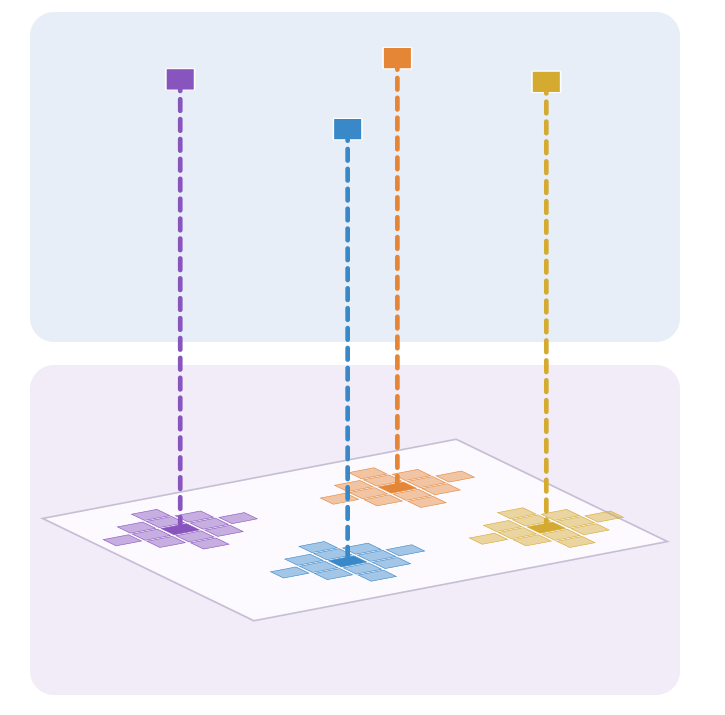
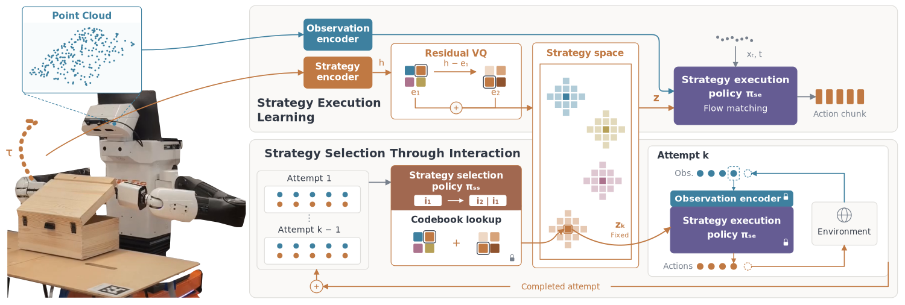

Simulation
20 physical conditions
Within 3 attempts+35.1 ppSTRATA − DSRL-PA
STRATA (RF) starts with a random strategy, then uses learned selection. Rand-PA selects randomly on every attempt.
ICRA 2027
A robot cannot always tell which manipulation strategy will work before making contact. STRATA learns strategies from demonstrations, then uses the response to each attempt to decide what to try next.
Weight, friction, and hinge stiffness can make similar-looking objects need different strategies. The robot needs a starting point before contact, and a way to use the feedback afterward.
Demonstration datasets often contain multiple ways to complete a task. These are not just individual motions to reproduce: their recurring trajectory modes suggest strategies to try when the right one is still unknown.

Motion variations form recurring modes. These modes provide a prior over a finite set of strategies.
A strategy can pursue the goal and reveal how the object responds. Even an unsuccessful attempt provides feedback that informs the next choice within this same strategy space.
STRATA jointly learns discrete codes for demonstrated trajectory modes and a strategy-conditioned execution policy from complete demonstrations. With the codebooks and execution components frozen, a second policy learns through reinforcement learning to select a code from previous attempts’ observations and actions. The code stays fixed during an attempt, and the recorded interaction informs the next strategy choice.
Jointly learned from demonstrations
Learned through reinforcement learning in simulation
The strategy encoder represents the motion across the entire demonstration. Its representation is learned jointly with the execution policy.

STRATA gains more success from subsequent attempts, in simulation and on the real robot without further training.
20 physical conditions
STRATA (RF) starts with a random strategy, then uses learned selection. Rand-PA selects randomly on every attempt.
Four conditions, no further training
Simulation: 20 conditions, two seeds, 100 trials per condition and seed. Real robot: four conditions, 10 trials each. Success is cumulative within each attempt budget; simulation means are rounded to one decimal.
DSRL-PS and DSRL-PA steer an unconditioned execution policy through its initial noise, choosing per step and per attempt respectively. RMA-like selects a strategy at each replanning step using STRATA’s strategy-conditioned execution policy. The DSRL comparisons change both the high-level choice space and executor training. Full evaluation in the paper.
The same initial strategy fails differently. Interaction history informs a different retry in each trial.